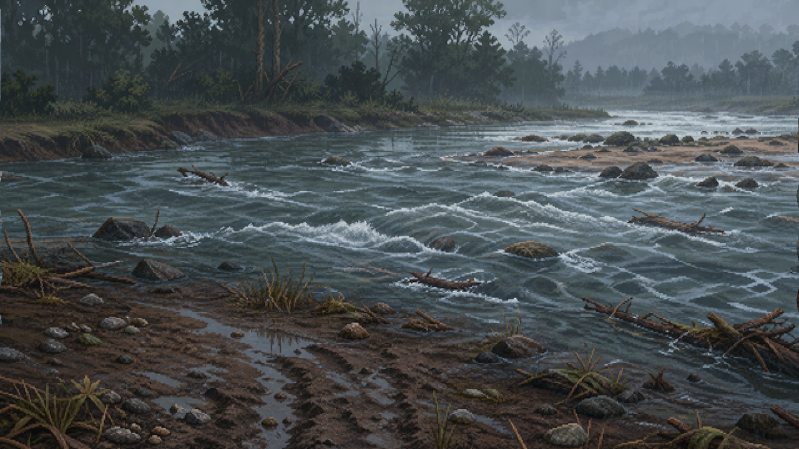
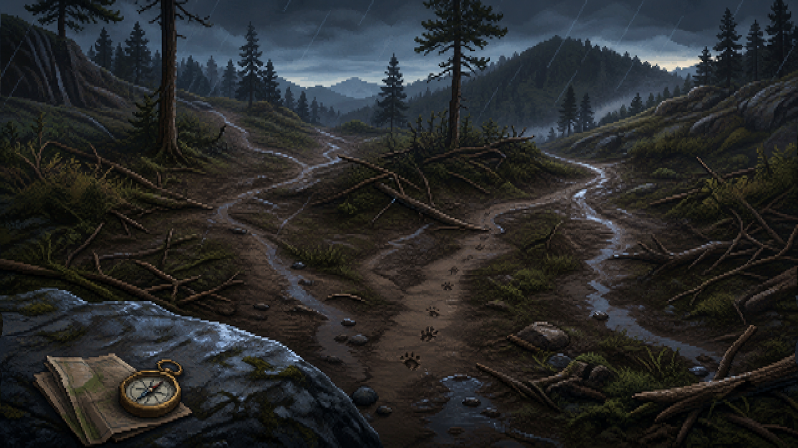
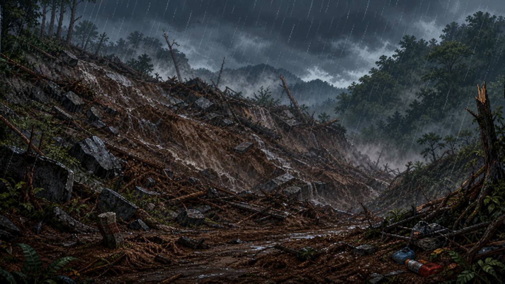
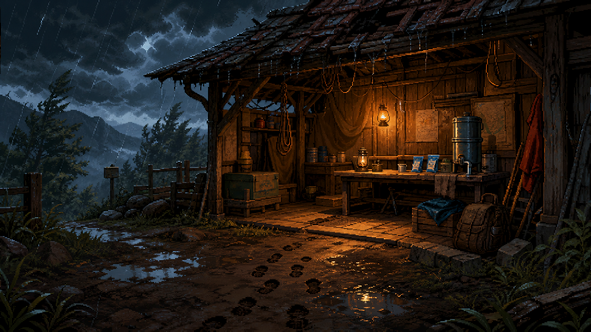
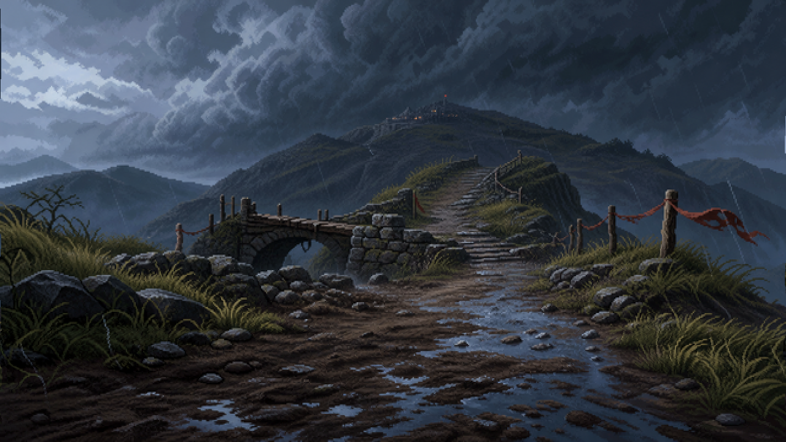
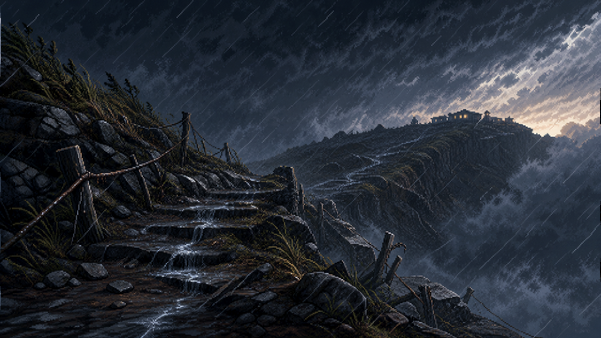

Experimental Study
Experimental Study
The Typhoon Crossing (SL-2B)
An interactive-narrative experiment on evacuation decision-making under an approaching disaster.
Participants play through a fictional journey: two siblings must cross fourteen leagues of river, marsh, and mountain to reach a shelter station before the typhoon Grey Heron makes landfall. At each scene they choose one of four actions, trading off progress, energy, and supplies while a pace-flag marks how far ahead of the storm they are. The task captures every choice, its reaction time, resource changes, and moments of withdrawal.
This study extends the Drift Diffusion Model (DDM) and Leaky Competing Accumulator (LCA) models for action initiation by introducing the State-Dependent Leak, Two-Boundary (SL-2B) sequential sampling model for dynamic strategy regulation. The SL-2B model is advanced in three primary directions. First, bounded recurrent excitation produces a state-dependent net leak, which maintains weak activation and increasingly constrains stronger activation. Second, pursuit and withdrawal are conceptualized as competing threshold-regulated outcomes within the same accumulation system. Third, accumulator states can be retained and transferred across decision episodes, thereby influencing subsequent decisions. Previous decision outcomes may update both immediate and distal evidence assigned to each alternative. With these extensions, the SL-2B model is positioned to describe and predict ongoing goal pursuit involving progress, resource expenditure, and feedback, particularly in contexts where previous decisions remain relevant to current choices.
The experimental protocol employs a 2×2 factorial design to empirically test these mechanisms. The experiment utilizes a foldback branching narrative game within an illusion of choice framework. The narrative objective is to reach safety before an approaching typhoon. To achieve this, participants select one of four strategies at each decision episode, each associated with a distinct pursuit index level. The task manipulates two independent variables, the Time Horizon, defined as the length of the journey; and Progress Visibility, indicating whether progress feedback is immediately available. For all four conditions, each participant's strategy choices, response latency, progress, and remaining game resources are recorded for each decision episode. This task is designed to provide a testable account of how accumulated evidence regulates persistence, strategy adjustment, and withdrawal during extended goal pursuit while maintaining ecological validity.






View the code & materials on GitHub → Archived on Zenodo (DOI) →